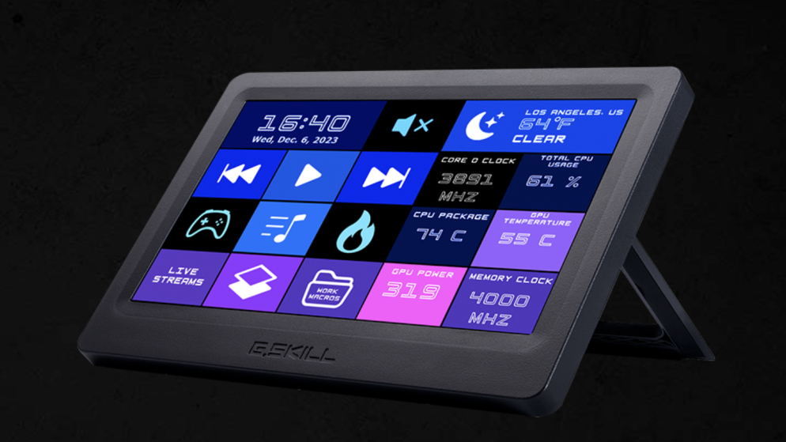

Ahora podrás tener toda la monitorización de tu PC encima de la mesa
WigiDash – Monitoriza tu PC en una pantalla externa

La marca G.SKILL, mundialmente conocida por sus kits de memoria RAM de alto rendimiento, ha dado el salto al mundo de los periféricos con el WigiDash PC Command Panel, un complemento que integra una pantalla de 7 pulgadas con interfaz táctil que puede mostrar una gran cantidad de información sobre el estado del sistema, y también cosas como la hora o el tiempo, así como diferentes atajos para realizar acciones concretas con un solo toque.